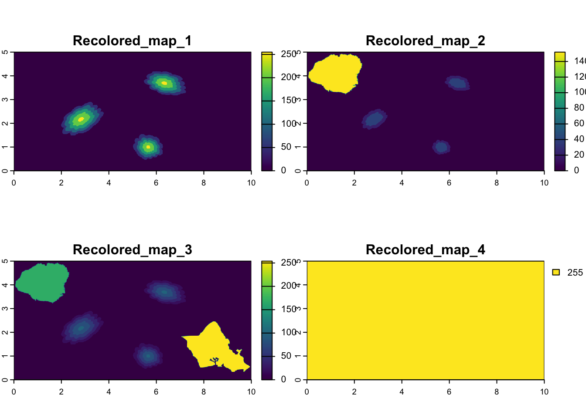
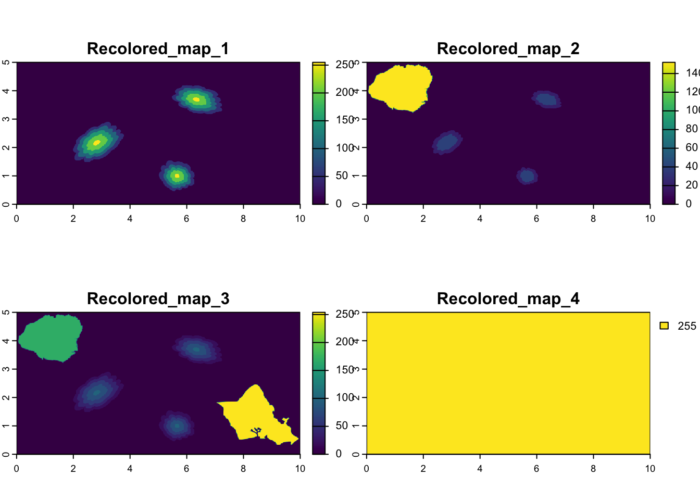
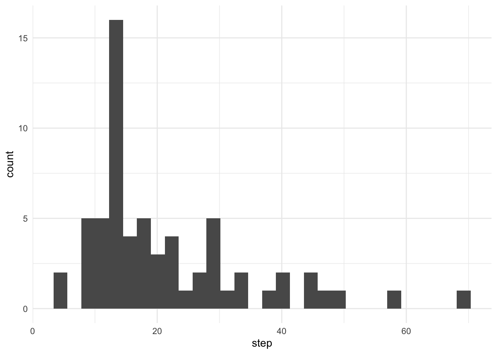
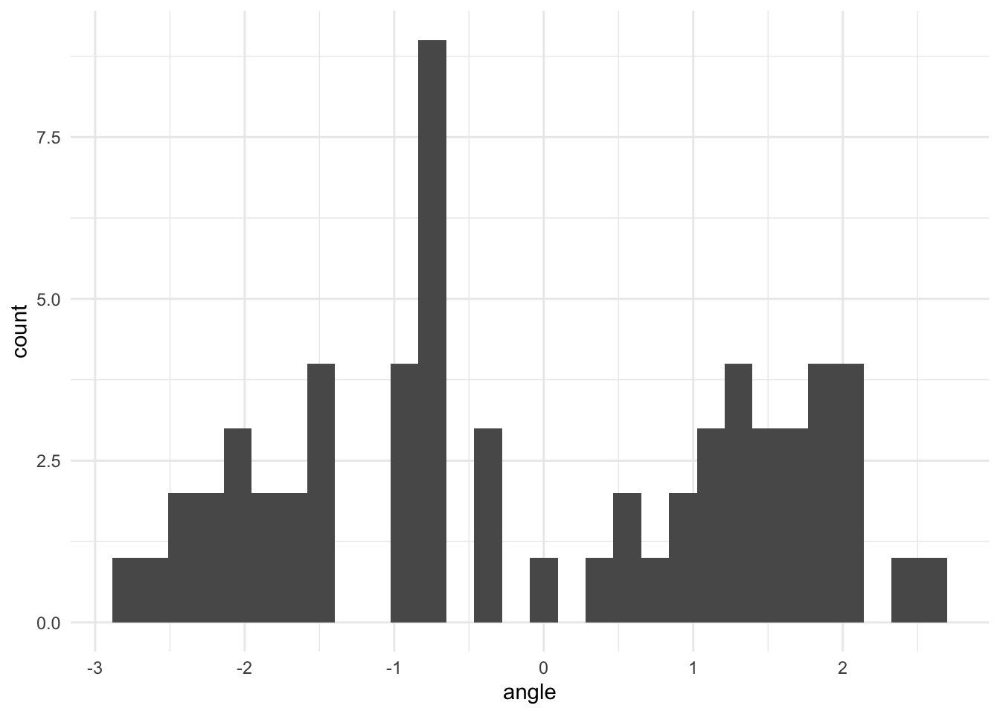

map <- rast("Recolored_map.tiff")
ext(map) <- ext(0,10,0,5)
crs(map) <- "epsg:4326"
map <- flip(map, direction = "vertical")
pods <- map[[1]]
plot(map)
Forating groups of pelagic predators drive schools of prey fish to the surface. Many sea birds take advantage of this to forage near the ocean’s surface. One such bird is the Red-footed Booby (Felis, Czapanskiy, and Adams 2019).
The subspecies Sula sula rubripes is the most abundant Booby in the Hawaiian islands. They reside mainly on the Northwestern Hawaiian islands. I chose to start my tracks at the western end of Oahu to align with the habitat of a noted pelagic predator, the spotted dolphin.
Spotted dolphins are often found between Hawaiian islands and stay further from shore. They hunt in pods of highly variable numbers.
Among Booby species, Red-footed Boobies have uniquely far ranges. The length of track I drew/its distance from the coast is realistic for a shorter Red-footed Booby foraging trip.
Research question: Do red-footed boobies hunt near pods of dolphins?
Hypothesis: Since hunting pods of spotted dolphins drive pelagic prey toward the ocean surface, if Red-footed boobies associate with spotted dolphins for foraging, then Red-footed Boobies will be in the foraging state when near dolphin pods.
M.1: Explain why we use models in science
Relation to statistical model
I started with a 10 inch by 5 inch canvas in google drawings.
I created a “map” (Figure 1) of the Oahu-Kauai channel use outlines of the islands that contain no red. That way, I was able use the islands to create a map and tracks (i.e., have a starting point that’s on land, flying only at sea) without affecting the environmental covariate data is measured using amount of red (Figure 2).
Then, I made concentric shapes with 50, 100, 150, 200, and finally the maximum 255 red values. The 255 red shapes represent dolphin pods, with concentric shape indicating proximity to the pods. I scattered a few of these “pods” with different sizes and dimensions throughout my map.
map <- rast("Recolored_map.tiff")
ext(map) <- ext(0,10,0,5)
crs(map) <- "epsg:4326"
map <- flip(map, direction = "vertical")
pods <- map[[1]]
plot(map)
Similarly, I also customized the blue values of the concentric circles (20, 40, 60, 80, 100) to make the track map (Figure 3).
Next, on a copy of this map, I drew out tracks using the line tool. Finally, I estimated the points where my track lines meet to the nearest 0.05 inch. In google drawings, 0 is at the top left of the page instead of the bottom, so I had to flip all of my values by subtracting the “reverse y” from 5 to get final y values.
track_df <- read_csv("Red_Booby_Tracks.csv") # Load the fake tracks into a dataframe for HMM
# Make the tracks into a vector using the coordinate system from the environmental data.
track_sp <- vect(track_df,
geom = c("x", "y"),
crs = crs(pods))
track_lines <- as.lines(track_sp) # Connect the points for visualization
# Visualize
ggplot() +
geom_spatraster(data = map[[3]]) +
scale_fill_grass_c(palette = "bcyr") +
geom_spatvector(data = track_lines, col = "black", linewidth = 0.75) +
theme(legend.position = "none")Why HMM works better than decision trees/random forests:
Random forests are a type of supervised learning, meaning they are trained to differentiate between classes using labelled data sets.
To label certain parts of the red-footed booby track data as “forage” and others as “transit”, tangible (e.g., visual) observations of the bird diving for prey (or observations of some other behavior that would allow for definitive state classification) are needed. Unambiguous observations of foraging behavior would allow for the direct association of movement path metrics and state labels. However, labeling data is not available for this data set.
Instead, transit and forage are hidden states. A model that can classify states without any labelled training data using only estimated parameter is needed to classify this data. The model must immediately figure out aspects of that data that the researchers do not know, the hidden states. So, for this data a Hidden Markov Model is the best fit.
M.2: Compare and contrast modeling approaches for biologging data
# Prepare the data for model fitting - add step length and turning angle columns
track_prepped <- prepData(track_df, coordNames = c("x", "y"))

| Parameter | Forage | Transit |
|---|---|---|
| Step mean | 35 | 15 |
| Step deviation | 10 | 5 |
| Angle mean | 0 | 0 |
| Angle concentration | 1 | 2 |
State 1 corresponds to transit. State 2 corresponds to foraging.
# First, extract the pod proximity at the track locations and attach the proximity data to the track data.
track_pods <- terra::extract(pods, track_sp)
track_prepped$pods <- track_pods[,2]
# Fit 2-state hidden markov model, incorporating the pod proximity
track_hmm <- fitHMM(track_prepped,
nbState = 2,
formula = ~ pods,
stepPar0 = c(35, 15, 10, 5),
anglePar0 = c(0, 0, 1, 2))
plot(track_hmm, ask = FALSE)Decoding states sequence... DONEDoes the figure support or contradict my hypothesis?
M.3: Fit models to data and interpret the results
The HMM output shows that red-footed boobies forage more near dolphin pods, supporting the hypothesis that they feed in association with spotted dolphins. As seen in Figure 6, the bird’s probability of staying in the transit state or switching into it plummets as it get close to a dolphin pod. On the other hand, when the bird is near a dolphin pod, it has a very high probability of being in the foraging state (i.e., switching into or staying into it).
Additionally, comparing Figure 7 and Figure 3 indicates that two of the bird’s three foraging periods happen in close proximity to a dolphin pod.